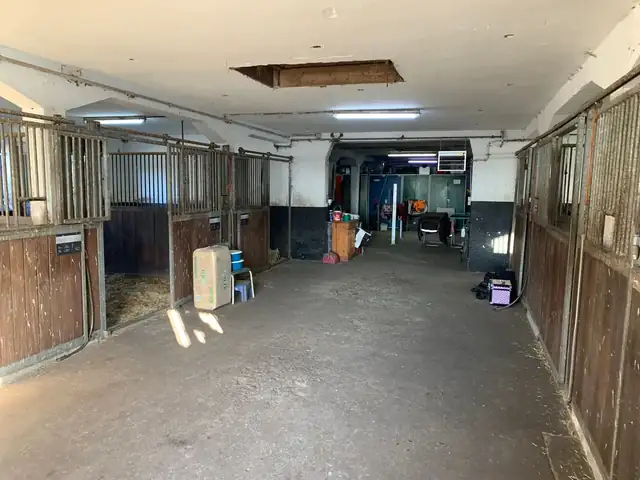
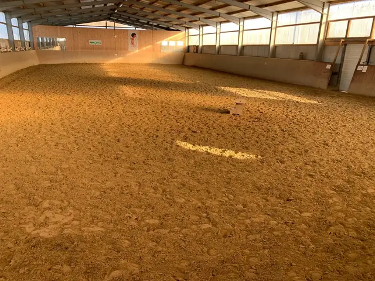
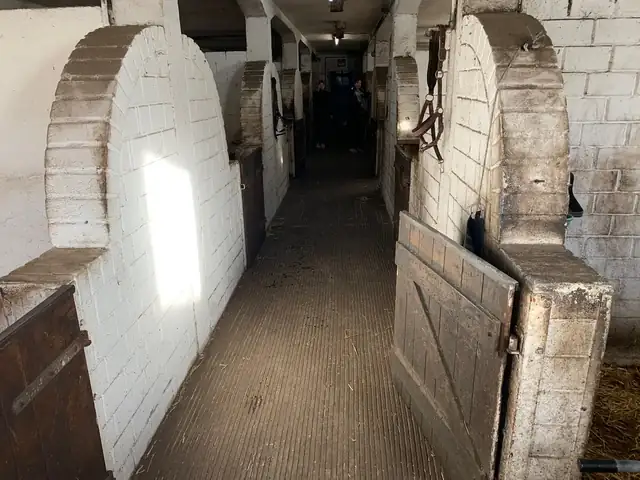
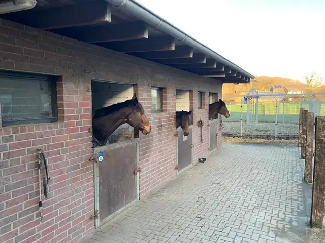
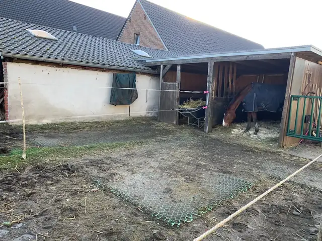

Traditionell
Hell, groß und luftig.
Der Hof liegt in 46414 Rhede (Westf.) mitten im schönen Ausreitgelände. Die nette, kleine Stallgemeinschaft freut sich über Freizeit- und Turnierreiter. Für die Pferde stehen unterschiedliche Boxentypen, zum Teil mit Paddock, zur Verfügung.

Für die Pferde stehen unterschiedliche Boxentypen, zum Teil mit Paddock, zur Verfügung.

Hell, groß und luftig.

Hell, groß und luftig, mit überdachtem Paddock.

Mit Weidezugang. Ihr Pferd entscheidet, ob Stall oder Wiese.

Ihr Pferd braucht viel frische Luft? Dann ist dieser genau richtig.
Schauen Sie sich den Hof in Ruhe an. Rufen Sie vorher kurz an, dann nehmen wir uns Zeit.
0177-2631728